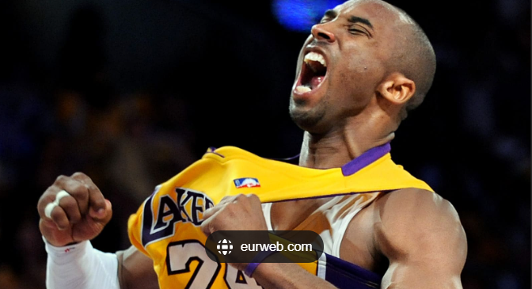
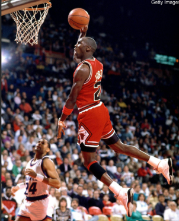
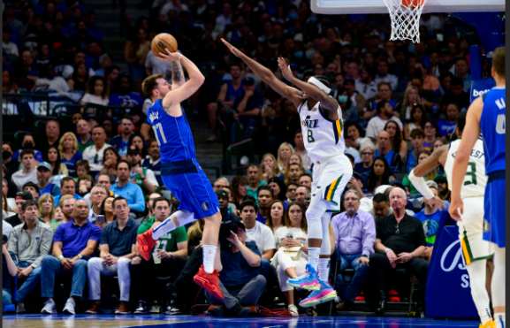

"My favorite player is Kobe Bryant because of his unmatched dedication, hard work, and 'Mamba Mentality.' He wasn’t just talented—he pushed himself to be great every single day. I admire how he overcame challenges, played through injuries, and always gave his best on the court.
Kobe inspired people not just in basketball, but in life. His mindset, work ethic, and will to win motivate me to be better in whatever I do."
"My favorite player is Michael Jordan because he’s the definition of greatness. His killer instinct, clutch performances, and six NBA championships show why he’s called the GOAT. What I admire most is how he always delivered when it mattered, and how he made everyone around him better. Watching his highlights still gives me chills. Jordan didn’t just play basketball—he owned the game."
"My favorite player is Luka Dončić because he plays with insane skill, confidence, and creativity. He makes the game look effortless—stepbacks, crazy passes, clutch shots—you name it. Even at a young age, he plays like a seasoned vet. I love how he stays calm under pressure and always puts on a show. Luka’s game is just fun to watch!"
